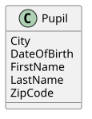
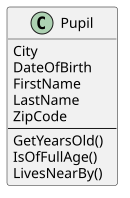

2 Classes and Objects
2.1 Classes Are Blueprints for Objects
A class describes what objects of a certain kind look like and what they can do. It is one level of structure above a method: where a method bundles a few statements into one task, a class bundles data and several methods into one unit.
A class defines three things:
- The state of its objects: which data every object carries. In C# these are fields and properties. The class only says that every pupil has a first name, not which name. The concrete values belong to the individual objects.
- The behavior of its objects: what every object can do. These are the methods of the class.
- What is visible from the outside (
public) and what stays hidden inside (private). This hiding is called encapsulation: other code may only use the public parts, so the class can change its inner workings without breaking anyone.
As a rule of thumb, data is private and is reached from the outside through properties, while the methods that form the object’s “interface” are public. Methods that only help other methods of the class do their work stay private.
2.1.1 Components of a Class
A typical class is made of these parts (you will meet each of them in the following chapters):
- A unique name, such as
Pupil. By convention it is a noun starting with an uppercase letter. privatefields that store the object’s data.publicproperties that give controlled access to that data. In special cases, e.g. a computed value that is only used inside the class, a property can also beprivate.- A constructor that sets up a new object.
publicmethods: what other code can ask the object to do.privatehelper methods that split the work of the public methods into smaller steps.
2.1.2 Defining the Pupil Class
Each class usually lives in its own file with the same name. To create Pupil.cs, use Add New Item → Class in Visual Studio (or Add → Class/Interface in Rider):
public class Pupil
{
}The class is still empty, but it is already a new data type: you could create Pupil objects now, they just wouldn’t hold any data yet.
2.1.3 Properties in C#
The simplest way to give the class some data is an automatic property. Both IDEs have a shortcut for it: type prop and press TAB (twice in Visual Studio). The IDE inserts a template in which you only enter the data type and the name. Property names use PascalCase: every word starts with an uppercase letter, including the first one (FirstName, DateOfBirth).
public class Pupil
{
public string FirstName { get; set; }
}{ get; set; } means that the value can be read (get) and changed (set) from the outside. The chapter Properties in Detail explains what happens behind the scenes.
2.1.4 Class Diagram
A class with a few properties quickly becomes long in code. A class diagram shows the same structure at a glance, without any implementation details. Here is the class definition:
public class Pupil
{
public string FirstName { get; set; }
public string LastName { get; set; }
public int ZipCode { get; set; }
public string City { get; set; }
public DateTime DateOfBirth { get; set; }
}And here is the matching class diagram. The box has the class name at the top, followed by its data:

The exercises specify their classes with such diagrams. The chapter UML Class and Object Diagrams explains the notation, e.g. the symbols for public and private.
2.1.5 Fields
A field is a variable that belongs to an object instead of to a method. Fields store the object’s state. A pupil could store its data in these private fields:
public class Pupil
{
private static int _nextId;
private readonly DateOnly _dateOfBirth;
private int? _zipCode;
}Like a variable, each field has a data type and a name. There are a few important differences and rules, though:
- Lifetime and scope: a local variable only exists while its method runs. A field lives as long as its object and can be used by all methods of the class. It cannot be used from outside the class, and each object has its own values: changing
_zipCodeof one pupil does not affect any other pupil. - Always
private: other classes should not change an object’s data directly. They go through properties or methods, which can check the new values. - Naming: fields start with an underscore and a lowercase letter, e.g.
_dateOfBirth. So you can tell at a glance whether a name refers to a field or to a local variable. The chapter Naming Conventions sums up all naming rules. - Initialization: fields should get their starting value in the constructor, so that a new object never contains random or missing data.
readonly: areadonlyfield can only be set in the constructor and never changes afterwards. A pupil’s date of birth is a good example.- Nullable types:
int?means that the field may also holdnull, i.e. “no value”._zipCodeisnullas long as no ZIP code is known. static: a field markedstaticdoes not belong to one object, but is shared by all objects of the class. The chapter Static vs. Instance explains why_nextIdneeds this.
2.2 Classes Are Templates
Think of a class as a stamp. The Pupil stamp has the fields FirstName, LastName, DateOfBirth and ZipCode, and the methods IsOfAge, IsOlderThan and LivesNearby. With this one stamp you can create as many pupil objects as you like. Each has its own, independent values (one pupil named Max Muster with ZIP 4060, another named Erika Musterfrau with ZIP 1010), and each can run the same methods on its own data.
2.3 Instantiation: Creating Objects Based on Classes
Creating an object from a class is called instantiation, and the object is called an instance of the class. The Pupil class defines the structure (FirstName, LastName, DateOfBirth, ZipCode, …), and each instance fills it with its own values:
| FirstName | LastName | DateOfBirth | ZipCode |
|---|---|---|---|
| Anna | Müller | 2008-05-12 | 4060 |
| Paul | Gruber | 2006-07-30 | (none) |
The chapter UML Class and Object Diagrams shows how to draw such objects.
2.3.1 Creating and Using Objects
In code, objects are created with the new operator:
Pupil pupil = new Pupil();
pupil.FirstName = "Max";
pupil.LastName = "Muster";
Console.WriteLine($"{pupil.FirstName,-15} {pupil.LastName,-35}");Here is what happens step by step:
new Pupil()reserves memory for a new object on the heap, the memory area for objects. A class is always a reference type.newreturns a reference to that object, a kind of address that says where it lives in memory. The variablepupilstores this reference, not the object itself.- With the dot operator (
pupil.FirstName) you reach the properties and methods of exactly the object the variable refers to.
You can only use an object after it has been created. If a variable of type Pupil does not refer to any object yet (its value is null), pupil.FirstName fails at runtime with a NullReferenceException.
Since C# 9 you can omit the class name after new when the compiler already knows the type from the left side. This is called target-typed new:
Pupil pupil = new();2.3.2 The Relationship Between Object and Class
Class and object are easy to mix up, so here is how they differ:
| Class | Object |
|---|---|
| Exists exactly once in the program | There can be any number of them |
| Describes what objects look like (state, behavior) | Holds concrete values and executes the operations |
| Is fixed when you write the code | Is created (and removed) while the program runs |
| Blueprint for creating objects | Built from that blueprint |
Each object is an instance of its class:
Class <┄┄instance of┄┄ Object2.3.3 Methods
So far the pupil only holds data. Methods add behavior: they describe what an object can do. A method of a class can read the object’s data and can also change it, e.g. a method Move() of a horse could increase its position. In a class diagram, the methods are listed in a second section below the data:

You already know how to write methods from the first year. The only difference is that these methods don’t need the pupil’s data as parameters: they belong to the object and can use its fields and properties directly.
Check your understanding of this chapter with the Classes and Objects Self-Check Quiz.